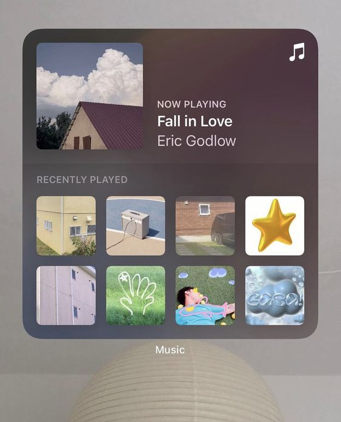
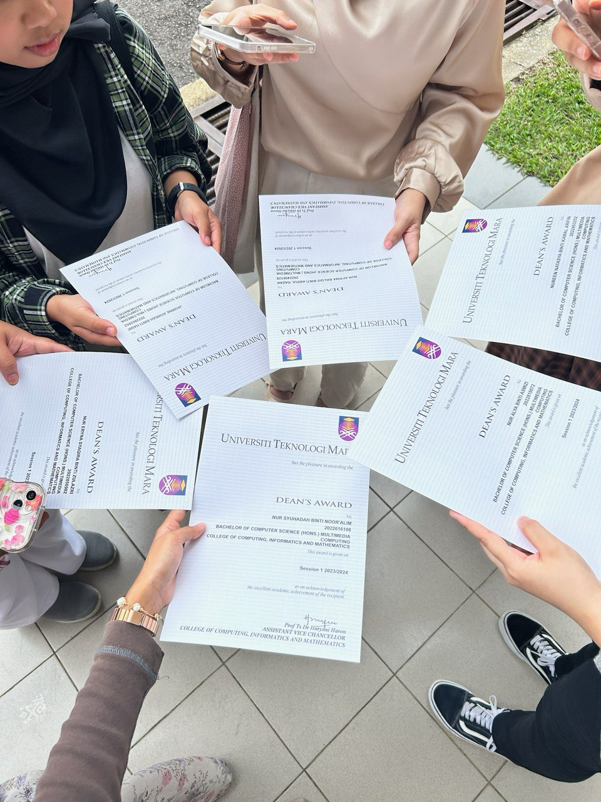
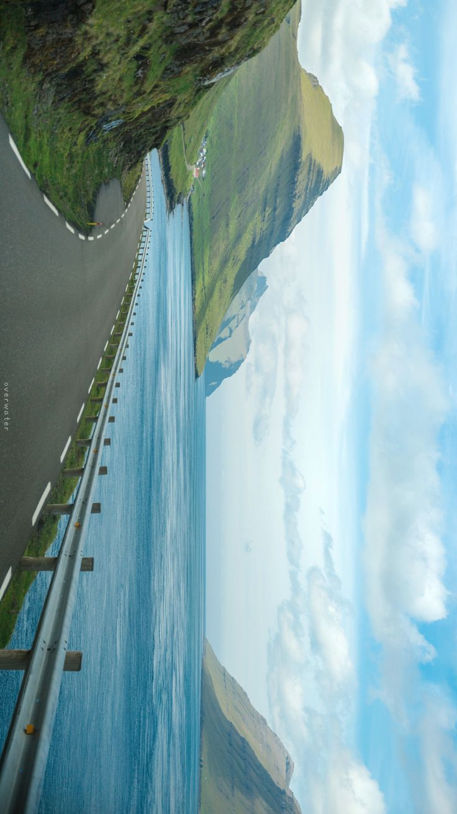
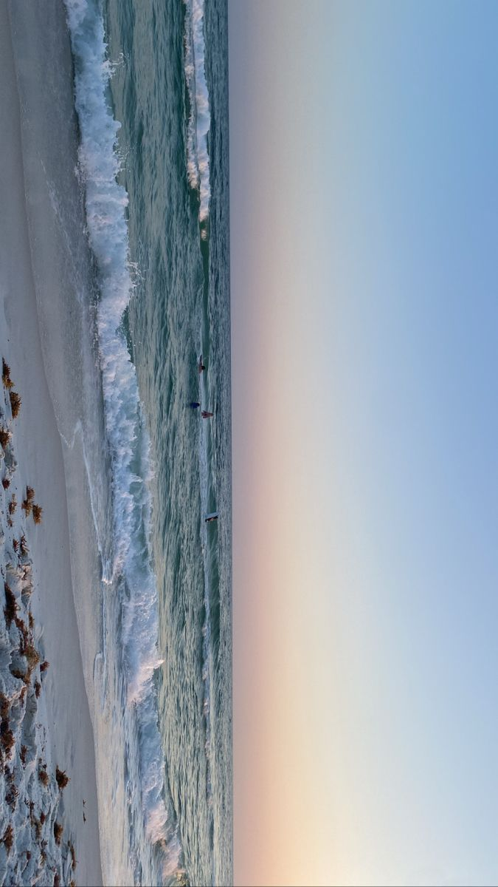

#1 Dancing ✨🕺💃 🎶
Traditional Dance
I enjoy learning and performing various Malay traditional dances such as Zapin, Joget, and Inang. These dances are beautiful expressions of Malay culture and heritage.
This is one of my recent performances during my studies in UiTM. It was a great experience, we were having so much fun on stage!
#2 Listening to Songs ♬ ₊.🎧⋆ ♪ ⋆⁺
Songs
Besides dancing, I also enjoy listening to music and singing along. Ballads and R&B are my favorite genres. Singing helps me relax and express myself creatively.
Here are a few songs and singers I love:
- Bohongi Hati - Mahalini (Ballad)
- Saturn - SZA (R&B)
- beside you - keshi (R&B and pop)
#3 STUDY! 🌿•₊✧💻⋆⭒˚☕️｡⋆
Why I Love Studying?
Why I Love Studying?
While some might see studying as a chore, I find it engaging and rewarding. It keeps me busy and helps me learn and grow. Education is important to me, and I strive to achieve my full potential. My dream is to be awarded the prestigious ANC award, and I believe in dedication and hard work to reach my goals. The biggest competition is with myself, constantly pushing myself to improve and learn more.
"The only person you are destined to become is the person you decide to be." - Ralph Waldo Emerson
#4 Catching sunsets, beautiful skies ೀ✨🌅.𖥔 ݁ ˖༄
Looking at the skies just heal me.
There's something magical about the way the sky transforms during sunset. I love witnessing those fleeting moments of color and capturing them in photos.
